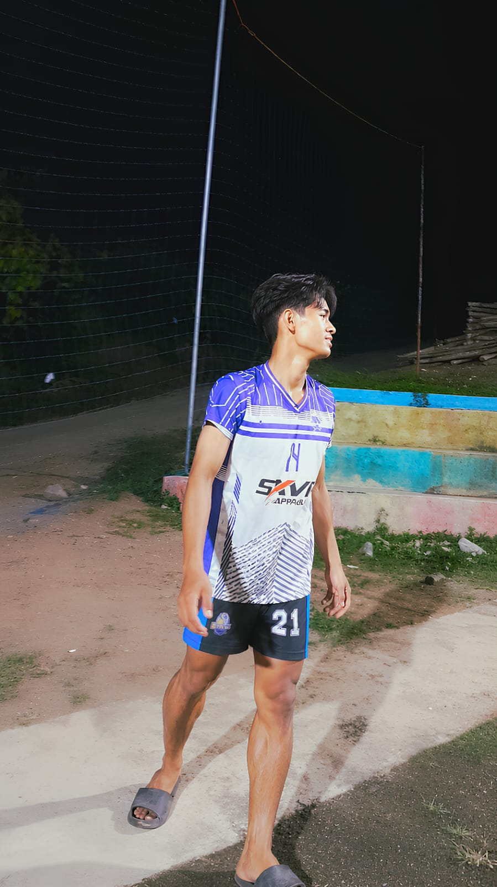

SISWA TJKT × JUNIOR WEB DEVELOPER × OUTSIDE HITTER
RAKA ILHAM
Membangun dengan kode. Bertumbuh melalui voli.
"My Life Is My Volleyball."
Saya sedang belajar menjadi Junior Web Developer sambil terus mengejar perkembangan saya di lapangan voli. Setiap hari adalah kesempatan baru untuk belajar, berkembang, dan lebih baik dari kemarin.

Pati, Indonesia 21
Tentang Saya
Saya adalah Raka Ilham, siswa kelas XII TJKT di SMK Tunas Harapan Pati. Saat ini saya sedang belajar menjadi Junior Web Developer sekaligus terus berkembang sebagai atlet voli.
Setiap hari saya mencoba membagi waktu antara sekolah, belajar teknologi, dan latihan voli. Tidak selalu mudah, tetapi dari proses itu saya belajar bahwa perkembangan tidak datang dalam satu malam. Sama seperti di lapangan, saya harus terus mencoba, menerima kesalahan, dan kembali berlatih.
Saya ingin belajar hal baru. Pemrograman adalah cara saya untuk menjelajahi teknologi, memecahkan masalah, dan mempersiapkan diri untuk memasuki dunia kerja. Sedangkan voli adalah passion yang membentuk karakter saya setiap hari.
Setiap Hari
Saya Harus Belajar. Saya Harus Berlatih.
Sekolah
Mengikuti pembelajaran TJKT dan memperdalam pemahaman tentang jaringan dan teknologi.
Coding
Belajar HTML, CSS, JavaScript, dan teknologi web lainnya untuk menjadi developer yang lebih baik.
Latihan
Berlatih voli, mengasah teknik, dan membangun ketangkasan sebagai Outside Hitter.
Belajar dari Kesalahan
Setiap kesalahan adalah pelajaran. Di code maupun di lapangan, saya terus berkembang.
Keahlian
Tools dan teknologi yang sedang saya kuasai
Frontend
- HTMLFamiliar
- CSSFamiliar
- JavaScriptLearning
- Responsive DesignFamiliar
- UI DesignLearning
Backend & Programming
- PHPFamiliar
- PythonFamiliar
- C#Learning
- JavaLearning
- LaravelLearning
Database & Tools
- MySQLFamiliar
- PostgreSQLLearning
- SupabaseLearning
- Git & GitHubFamiliar
- VS CodeFamiliar
Sedang Dipelajari
Virtual Machine / VirtualBox
Saya sedang menjelajahi virtualisasi dan VirtualBox untuk memahami lebih dalam tentang sistem operasi, server, dan infrastruktur IT. Ini adalah bagian penting dari pembelajaran TJKT saya.
Yang Sedang Saya Bangun
Fokus pada pengembangan diri, bukan proyek selesai
Kemampuan
Terus memperkuat dasar pemrograman dan pengembangan web. Saya belajar dari setiap proyek, baik yang berhasil maupun yang masih dalam proses.
Pengalaman
Belajar melalui tugas sekolah, praktikum, dan berbagai percobaan. Setiap kesempatan adalah tempat belajar baru.
Masa Depan
Mempersiapkan diri untuk memasuki dunia kerja setelah lulus. Ingin terus mengembangkan skill dan mencari pengalaman industri.
Pembelajaran
Terus mencoba teknologi baru dan memperluas kemampuan. Tidak pernah puas, selalu ada yang baru untuk dipelajari.
Sertifikasi & Pembelajaran
Python Programming
Samsung Innovation Campus
Program pembelajaran Python yang komprehensif, mencakup fundamentals hingga aplikasi praktis.
Volleyball
Lebih dari Sekadar Olahraga
"My Life Is My Volleyball."
Saya telah bermain voli sejak sekolah dasar, selama kurang lebih 8 tahun. Voli bukan hanya tentang kompetisi dan pemenang. Untuk saya, voli adalah tentang teman-teman yang bisa menerima segala tentang diri saya, dan permainan yang memberikan kesan berbeda dari olahraga lain.
Persahabatan
Teman-teman yang mendukung dan menerima saya apa adanya.
Disiplin
Latihan konsisten yang membentuk karakter dan ketangkasan.
Kompetisi
Semangat untuk berkompetisi dan menjadi yang terbaik di lapangan.
Pertumbuhan
Setiap pertandingan dan latihan adalah kesempatan untuk berkembang.
Yang Sedang Saya Latih
Receive
Akhir-akhir ini receive saya terasa kurang konsisten. Karena itu, saya kembali fokus melatih dasar, membaca arah bola, posisi tubuh, dan konsistensi. Ini adalah fondasi yang penting untuk seorang Outside Hitter yang baik.
Target Saya
Mimpi yang sedang saya kejar
Kejurkab
Kejuaraan Kabupaten
Kejurprov
Kejuaraan Provinsi
Kejurnas
Kejuaraan Nasional
Timnas
Tim Nasional (jika berkesempatan)
Inspirasi Saya
Atlet yang menginspirasi perjalanan saya

Yuki Ishikawa
Outside Hitter
🇯🇵 Jepang

Ran Takahashi
Outside Hitter
🇯🇵 Jepang

Thomasz Fornal
Outside Hitter
🇵🇱 Polandia
Perjalanan di Lapangan
Pertandingan yang telah saya ikuti
Pertandingan yang Harus Kulewatkan
"Tahun ini ada satu pertandingan yang sebenarnya sangat ingin saya ikuti."
Kejuaraan Kabupaten menjadi salah satu kesempatan yang saya tunggu, tetapi jadwalnya bertepatan dengan kunjungan industri sekolah. Pada akhirnya saya tidak bisa turun ke lapangan.
Jujur, rasanya sedih. Ketika sudah berlatih dan membayangkan bisa bermain di pertandingan, harus melewatkannya bukan sesuatu yang mudah.
Tapi saya belajar bahwa perjalanan seorang atlet tidak selalu berjalan sesuai rencana. Ada pertandingan yang bisa kita mainkan, dan ada pertandingan yang hanya bisa kita tunggu untuk kesempatan berikutnya.
"Saya belum selesai. Lapangan berikutnya masih menunggu."
"Satu pertandingan yang terlewat bukan akhir dari perjalanan."
"Kalau belum waktunya menang, setidaknya jangan berhenti berkembang."
"Jatuh di satu rally bukan berarti rally berikutnya selesai."
"Ada pertandingan yang harus kulewatkan, bukan karena aku berhenti berjuang, tetapi karena hidup membawaku ke jalan yang lain. Aku akan terus berlatih sampai lapangan berikutnya memanggil namaku."
Mari Terhubung
Jika ingin berdiskusi tentang teknologi, web development, atau sekadar berbagi cerita tentang voli, saya terbuka untuk terhubung.